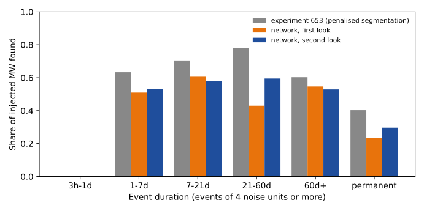
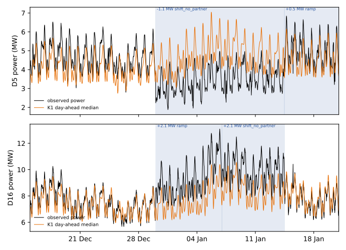

Does a neural network that reads all 15 Primaries' demand residuals at once find and pair load-shift events better than the penalised segmentation of experiment 653?
A neural network that reads all 15 Primaries' demand residuals together did not find or pair injected load-shift events better than the penalised segmentation of experiment 653. A Primary substation is the substation that steps electricity down to a local distribution network, and the project forecasts the demand at each Primary. Operators sometimes switch part of a circuit from one Primary to a neighbour, which moves demand between the two (a load shift). The unexplained demand (the residual) is the observed cleaned power minus a demand forecast that uses no lagged power. Experiment 653 decoded the residual of each Primary with a penalised segmentation. We asked whether a recurrent neural network, trained on many synthetic load shifts added to the real residual, finds more of those load shifts and pairs the two ends of a transfer more often. We scored the network on experiment 653's own residual panel, synthetic events, and scorer.
The network found 0.48 of the injected megawatts (mean of 3 seeds, seed range 0.44 to 0.54) in the first look and 0.52 (0.50 to 0.54) in the second look, against 0.64 for experiment 653. The network paired 0.16 and 0.17 of injected transfers, against 0.18. The verdict is not supported. The pre-registered stop rule closes the neural-network line of work on this panel. This panel is not the full 2019-onward history of ERA5 and CAMS weather estimates, because the cross-fitted 2019-onward residual does not exist (the experiment reads experiment 653's panel: 15 Primaries, 2022-01-01 to 2026-06-30). The result therefore does not show that a much larger training history would fail; a rerun on the full history is the step to take only if the maintainer wants that question answered.
The first look is the plan as pre-registered. The second look is a re-run made after the first look showed overfitting (validation loss flat while training loss fell). The plan allowed one re-run after a fixable bug, and we used it for overfitting, which stretches that rule. The second look used a smaller network (32 hidden units), dropout 0.3, weight decay 0.01, Gaussian noise on the inputs, and 300 injected worlds instead of 120. It was chosen after the first look's scored numbers were read, so its numbers are not blind to them. A seed is one random start of network training; each look has three.
Figures
The first figure shows that the second-look network found fewer injected megawatts than experiment 653 in nearly every duration band. The second figure shows the verified D5 and D16 transfer, which the network decoded late and did not pair.


Terms used below
- Noise unit: a Primary's typical difference between successive 6-hour block means (experiment 653). World: one copy of the residual panel with synthetic events added; there are 16 scored worlds. Edge: a neighbour link between two Primaries in the electricity network. Edge transfer: a pair of opposite-sign shifts at two linked Primaries that start and end together.
- Found: an injected event counts as found when it has a decoded event at the same Primary and sign, a start within 12 hours, and a span overlap of at least half. Paired: an injected transfer is found and decoded as an edge transfer with the right partner.
- Strict and loose match: a logged shift counts as matched when a decoded start lies within 2 hours or 24 hours of the logged onset (experiment 254, which defines LR_b20 and RO-NC). K1: the day-ahead median forecast of the project's leaderboard. RO-NC and LR_b20: two alarm rules from experiment 254 that flag likely logged shifts; LR_b20 is the one compared here. D5, D16, and D18: anonymised Primary names.
- Validation worlds: injected worlds built on 2023-07-01 to 2023-12-31, used to choose decoder settings and the stopping point, never the scored years (2024-01-01 to 2026-06-30).
Results
- Injected events found (spec default, 227 events of 4 noise units or more lasting 1 day or more, MW-weighted). Experiment 653 0.64; first look 0.47, 0.54, 0.44 by seed (mean 0.48; 95% interval for seed 0, resampling the scored worlds, 0.40 to 0.54); second look 0.54, 0.52, 0.50 (mean 0.52; seed 0 interval 0.46 to 0.66). The experiment 653 figure reproduces its stored table exactly. P1 (0.72 or more) fails in both looks.
- Equal-rate comparison. The network calls 0.4 to 0.8 real-record events per Primary-year, so the comparison at experiment 653's 6.6 events per Primary-year is not available. Across the whole decoder grid (events per Primary-year from 0.4 to 2.1, seed mean) the first look found 0.29 at the highest rate and 0.48 at its chosen setting. Within the grid, recall did not rise with the rate, so raising the rate in that range would not have closed the gap. Rates near 6.6 were not tested.
- Paired. MW-weighted share of injected transfer ends paired correctly: experiment 653 0.18; first look 0.17, 0.19, 0.11 (mean 0.16); second look 0.20, 0.19, 0.13 (mean 0.17). Applying experiment 653's pairing rule to the network's events instead of the network's edge posterior gives 0.15 (first look) and 0.17 (second look). P2 (0.50 or more) fails.
- By duration band (second look, found). 1 to 7 days 0.53, 7 to 21 days 0.58, 21 to 60 days 0.60, over 60 days 0.53, permanent 0.30. Experiment 653: 0.63, 0.70, 0.78, 0.60, 0.40. Events shorter than a day are not in this subset.
- By injector spec (found / paired; second look; experiment 653 in brackets). Constant megawatts 0.48 / 0.20 (0.66 / 0.14); proportional to the donor's power 0.37 / 0.02 (0.56 / 0.24); short-heavy 0.40 / 0.09 (0.62 / 0.20); long-heavy 0.43 / 0.03 (0.43 / 0.11); stress 0.42 / 0.03 (0.65 / 0.07).
- Timing (spec default, a miss counts as a failure). The start is within 2 hours for 0.39 to 0.44 (first look) and 0.37 to 0.40 (second look) of injected events (experiment 653 0.53); the end is within 6 hours for 0.35 to 0.40 (0.48). Among found events with an end, the end is within 6 hours for 0.73 to 0.83 (experiment 653 0.82). P6 (0.65 of all injected events) fails.
- Cross-injector check (first look only; found by a network trained on the test injector, by a network trained on the other injector, and the drop). Test injector g1 (constant megawatts, square edges): seed 0 0.32 / 0.48 / -0.15, seed 1 0.42 / 0.47 / -0.06, seed 2 0.61 / 0.34 / +0.27. Test injector g2 (shares of the donor's power, wide edges, loose shares, staggered starts): 0.39 / 0.39 / +0.01, 0.39 / 0.36 / +0.03, 0.29 / 0.52 / -0.24. The drop ranges over 0.42 (g1) and 0.27 (g2) across seeds, 5 to 8 times the 0.05 threshold, so P3 is not shown either way. The verdict does not depend on P3, because P1 already fails. The second look did not rerun this check.
- Real versus injected events. A logistic classifier on four window features (step size, step width, noise after, noise before) separates 81 injected edge events from 56 real events (all verified events of experiment 580 plus experiment 653's 4 real edge events) with an area under the curve of 0.91 (95% interval 0.84 to 0.94, out-of-bag injected events). P4 (below 0.65) fails. The real set mixes Primaries and years, so part of the separation may be a Primary or season effect.
- Real record, scored years. First look: 15, 17, and 26 events (0.40, 0.45, 0.69 per Primary-year); strict and loose matches of the 77 logged shifts of more than a day 2 / 4, 3 / 4, and 7 / 11. Second look: 18, 20, and 29 events; matches 4 / 6, 4 / 8, and 5 / 8. Experiment 653: 246 events, 8 / 17. LR_b20: 78 alarms (2.1 per Primary-year), 19 / 24. P5 (at least 11 strict matches) fails in every seed. Edge events on the real record: 0, 2, and 0 per seed in the first look and 0, 2, and 0 in the second look; the rewired graphs give a median of 0, so P7 is not informative.
- Event-free rows. In rows more than 14 days from every logged or verified event, the second look (seed 0) decodes 3 events (0.11 per event-free Primary-year) and experiment 653 decodes 148 (5.4). The low rate follows from the boost selected by tuning on validation worlds (see Method), not from higher precision, since the network also finds fewer injected events.
- Verified pair (D5, D16). The verified onsets are 2025-12-29 01:00 (D5) and 2025-12-29 16:00 (D16), with a shared end on 2026-01-13 11:30. All six networks decode D5's start 24 hours late (2025-12-30 01:00). Five decode D16's start 9.5 hours late (2025-12-30 01:30) and one (second look, seed 1) 36 hours late. Both ends are about 24 hours late (2026-01-14 11:30 and 12:00), D5 at about -1.1 MW and D16 at +2.1 MW, and none pairs them. Experiment 653 is also 24 hours late at D5.
- Four scenarios (normalised MAE of the median forecast, per cent of effective capacity; the forecast is the lag-free demand forecasting model, seed 0; "after" subtracts the slow level and the decoded events in hindsight). Second look: all rows 6.31 to 5.88; rows outside events and 7 or more days after an event 6.01 to 5.83 (614,336 rows); inside events 19.62 to 8.14 (13,438 rows); the 7 days after an event 7.36 to 6.99 (3,696 rows). First look: 6.31 to 5.94; 6.07 to 5.86; 16.78 to 8.99; 7.41 to 8.45. Experiment 653: 6.31 to 5.29; 5.28 to 5.01; 8.62 to 5.87; 5.69 to 5.30. The inside-event row falls by construction, and each arm's row sets differ because the decoded events differ.
Checks
- Median minus mean forecast per site, tail calibration, and the curtailment-cost score: not applicable, because the table produces no forecast. The normalised MAE in the four scenarios is the only forecast-error measure.
- Audit triggers. Trigger 1 (a known-answer or discriminator control failed) fired: P4 and the D5 and D16 pairing fail. Trigger 2 (a result contradicts its prediction) fired: P1, P2, P4, P5, and P6 fail. The audit and its triage are in "Reviews and triage".
- Unlogged events. National Grid Electricity Distribution (NGED)'s logs miss events, so the fractions of decoded events that match a logged shift undercount true matches, and counts of true events are lower bounds.
- Not run: the cross-injector check on the second look, the recall-by-size comparison on real events, the causal variant, the 2019 to 2021 history, and the injected-world rewired-graph placebo (pairing recall on rewired graphs).
Method
Architecture.
- Input. Per Primary and 6-hour block: the residual with experiment 653's masked frozen slow level removed, in noise units (clipped at 30); a present flag; the 1-day and 3-day step statistics (mean of the next blocks minus mean of the previous blocks) in noise units; the share of blocks in a centred 60-day window whose 1-day step exceeds 4 noise units; and the sine and cosine of the block's position in the day.
- Encoder. A two-layer bidirectional gated recurrent unit shared by all Primaries (48 hidden units per direction in the first look; 32 with dropout 0.3 in the second look), a layer that joins each Primary's state with the mean state of its neighbours, and a second bidirectional recurrent layer.
- Heads. Per Primary and block: four class logits (none, shift, ramp, routine), a sign logit, and an amplitude. Per link between two Primaries: three logits (off, first donates, second donates), antisymmetric in direction by construction.
- Decoder. A four-state Viterbi path per Primary (none, up, down, other) with onset penalty 0.5, sign-flip penalty 1.0, and a factor of 10 on the 'none' probability (chosen on validation worlds); segments under 1 noise unit are dropped; starts and ends are refined to the half-hour within 36 half-hours of the block boundary. Pairing joins opposite-sign events at linked Primaries whose starts are within 6 hours, whose spans overlap by at least half, whose recipient-to-donor megawatt ratio lies in 0.3 to 1.5, and whose mean edge posterior reaches the cut-off (0.3 or 0.5, chosen on validation worlds).
Training regime.
- Data. Experiment 653's injector, unchanged, adds synthetic events to the real residual of 2022-01-01 to 2023-06-30 (120 worlds in the first look, 300 in the second, half constant-megawatt and half proportional shapes). Each step draws 8 random 180-day crops; 20% of crops carry no injection. D18 has no data in these years. The injector is the one merged in experiment 653; the later shared generator of experiment 660 was not used.
- Targets and loss. Class, sign, amplitude, and edge state per block from the injected truth; time with no injected event has target 'none' at weight 0.1. Weighted cross-entropy, binary cross-entropy for sign, Huber loss for amplitude (weight 0.1), and a small penalty on state changes. AdamW, learning rate 0.003 with a one-cycle schedule, 2,400 steps, checkpoint with the lowest validation loss, 3 seeds. About 3 minutes per network on the shared GPU; 0.7 GPU-hours in all, including the cross-injector networks and tuning.
- Cross-injector networks. One network trained on constant-megawatt square-edge events and one on proportional events with wide edges and loose shares, three seeds each, tuned on validation worlds from their own training injector.
Measurement.
- Scored worlds. Experiment 653's injected worlds (same seeds, noise units, and scorer), 16 worlds across 6 specs; experiment 653's default arm is re-run beside them. The residual's demand model trained on all rows, and the slow level, noise units, and common mode are fitted on the whole record without labels, as in experiment 653. Injected events are added to the residual, not to the power, so recall on injected events may not carry over to real events (the direction of any bias is unknown).
- Real record. Events per Primary-year, logged shifts matched strictly and loosely, the rewired-graph placebo (100 degree-preserving rewirings applied at inference), the verified pair, the event-free stratum, and the four scenarios.
- Intervals. Whole worlds are resampled (2,000 draws) for seed 0; the three seeds are reported side by side. A claim about the real record rests on a small number of events.
Reviews and triage
- Plan review (Sonnet). 15 findings, 5 of them high: window leakage at the split dates, the verdict rule, the equal-rate comparison, the discriminator's power, and the cross-injector design. All were accepted except the removal of P4 from the verdict (kept, with its low power stated).
- Code review (Sonnet, before the first run). 13 findings. Accepted and fixed: tuning on the wrong injector for the cross networks, a pairing rule looser than experiment 653's, a pairing arm that changed the event set, a NaN tail the network never trained on, pulses overwriting shift labels, the rate denominator, the square-edge injector setting, and the cross-test seed collision. Accepted and disclosed: checkpoint selection by validation loss rather than recall, and merging same-sign fragments only for shifts.
-
Tuning detour. The first tuning showed the network calling a shift in most blocks (the 0.1 weight on unlabelled time distorts the class prior). The decoder gained a boost on the 'no event' probability and a 1-noise-unit amplitude floor, both tuned on validation worlds only.
-
Prose review (Sonnet). 22 page-level findings and many sentence-level ones. Accepted: moving the figures and this section, defining first look, second look, seed, edge, RO-NC, and LR_b20, correcting the D16 lateness, the cross-injector range, the real-record wording, and the overclaims about the injector, the 0.64 baseline, and the ceiling. Not done: turning the Results bullets into tables.
- Numbers audit (Sonnet). Re-derived the Results from the stored files; everything matched except the start-timing range (it covered only the second look), D16's start (9.5 hours late in five networks, 36 hours in one), and two roundings. All three were corrected. Not re-derived: the classifier area under the curve and the experiment 653 pairing arm.
- Audit triggers 1 and 2 (see Checks) are covered by this audit and the reviews above.
Files
ml-experiments/00658-edge-state-event-table-neural-network/e00658_data.py: builds features and targets for injected worlds, using experiment 653's injector and slow level.e00658_net.py: the network and its loss.e00658_decode.py: the Viterbi decode, event extraction, and pairing.e00658_train.py: builds the banks of injected worlds and trains the networks (stepsbankandtrain).e00658_run.py: tunes the decoder on validation worlds, scores the injected worlds, decodes the real record, and runs the rewired-graph placebo.e00658_report.py,e00658_report_real.py,e00658_figure.py: print every number on this page and draw the figures.- Imported code, read only: the folder of experiment 653 (panel, injector, slow level, decoder pieces, scorer).
data/ml-experiments/00658-edge-state-event-table-neural-network/:bank_*.pkl(injected worlds),net_*.pt(fitted networks),costs_*.json,tuning_*.parquet,injected_*.parquet,cross_*.parquet,baseline_e653.parquet,real_events_*.parquet, andrewired_*.json(written here, never committed).- Experiment 653's data folder, 580's verified events, 254's LR_b20 alarms, and the K1 backtest
export (
data/ml-experiments/backtest_export_roster_2026-11-07/), all read only.